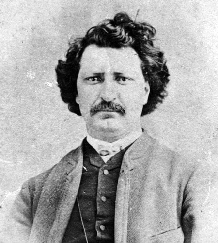

Louis Riel was a Métis leader and the founder of Manitoba, he was known for defending the rights of the Métis people during the late 1800s, he was also known as a resistance fighter who had problems with the canadian government, who had plans to transfer control of their lands, he feared that the english-speaking settler would threaten the rights and culture of the Métis.
Louis was born on October 22nd, 1844 in St. Boniface.
He set out to annex lands that were in control by the Hudson Bay Company.
He played a huge role in the founding of manitoba.
He was a leader in the Red River Rebellion.
He was a Metis descent, with his paternal grandfather being indigenous, and he is the oldest of the 11 children.
A lot of us Metis still consider him to be a great hero for his efforts to protect our rights and culture.
He died on Nov 16, 1885 and was buried at the St. Boniface Cathedral
Riel was born in Saint-Boniface, in the Red River settlement (now Winnipeg). His father was a businessman and a political leader in the Métis community. His involvement likely influenced Louis who left Red River at a young age to study in Quebec.
Riel was an exemplary scholar during his formal education as well as during his years at the Sulpician school in Montreal. However, after an engagement with a young French-Canadian woman was broken off, he left the seminary and moved back to Red River.
After moving back to Red River, Riel rose to prominence during the Red River Resistance of 1869-1870, where he led efforts to protect Métis rights as Canada expanded westward. His government negotiated Manitoba's entry into Confederation, but his orders to execute Orangeman Thomas Scott made him an unfriendly figure in Protestant Ontario.
When Ottawa sent troops Manitoba, Riel sensed that the troops were out to lynch him. He fled to the US to avoid prosecution. During this, he was elected into Parliament multiple times but never once took his seat. He also was institutionalized as he experienced multiple religious visions. In 1884, he returned to Canada to lead the North-West Resistance, but was defeated, captured, and tried for treason.
Riel was executed in 1885. His death polarized Canada as English-speaking Canadians largely viewed him as a traitor, while French-Canadians and Métis view him as a martyr.
Louis Riel is remembered as a national hero by the metis and the father of Manitoba. During his life, some people saw him as rebel, but today he is respected for protecting the Metis people and helping to shape the history of canada.
His actions helped the Metis keep their land, culture, language alive. He showed great courage by standing up against unfair treatment, even when it cost him his life.
Today, his contributions are honored across Canada, especially by the Metis Nation, as a symbol of resilience, leadership, and cultural pride.